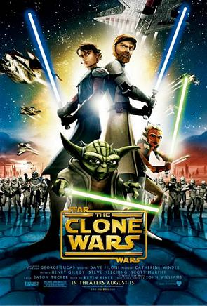
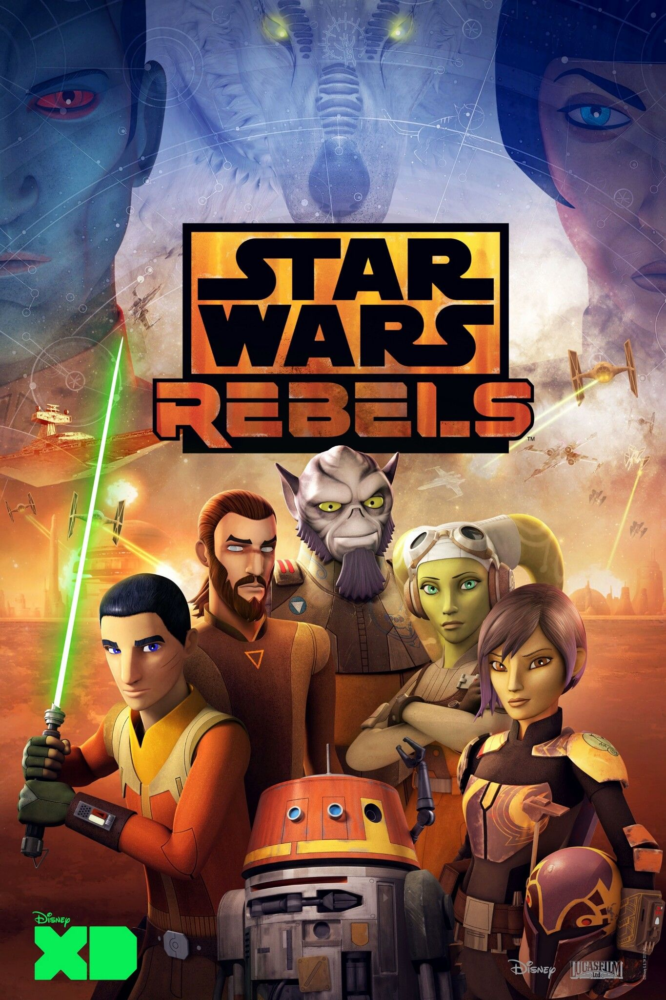
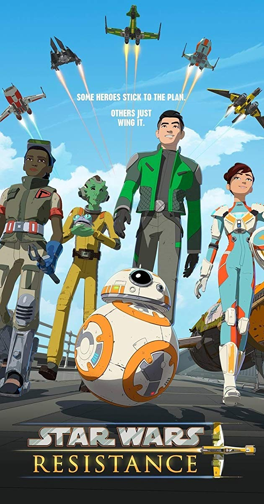
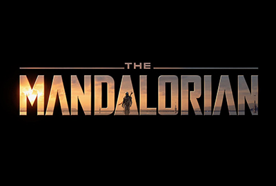

Serie TV
STAR WARS-TV SERIES
SERIE TV ANIMATE
 |
 |
 |
| 7 stagioni |
4 stagioni |
2 stagioni |
| Ambientata nell'universo fantascientifico di Guerre stellari, durante le guerre dei cloni, la serie si colloca cronologicamente tra i film prequel L'attacco dei cloni e La vendetta dei Sith, ricoprendo un periodo di tre anni.La serie ha a che fare con i vari conflitti intercorsi tra la Repubblica Galattica e i Separatisti durante le guerre dei cloni. |
Ambientata cinque anni prima del film Guerre stellari[1] e quattordici anni dopo La vendetta dei Sith, la serie si svolge durante un periodo in cui il tirannico Impero Galattico domina nella galassia e dà la caccia agli ultimi Cavalieri Jedi, mentre una nascente Ribellione contro l'Impero sta prendendo forma. |
La serie, ambientata nell'universo fantascientifico di Guerre stellari circa sei mesi prima del film Il risveglio della Forza ed è incentrata sul personaggio di Kazuda Xiono, un giovane pilota della Resistenza del Generale Organa, che ha il compito di spiare la crescente minaccia del Primo Ordine. |
SERIE TV in LIVE-ACTION
 |
| 1 stagione |
| Ambientata nell'universo di Guerre stellari dopo le vicende de Il ritorno dello Jedi e prima di Star Wars: Il risveglio della Forza, racconta le avventure di un pistolero mandaloriano oltre i confini della Nuova Repubblica. |